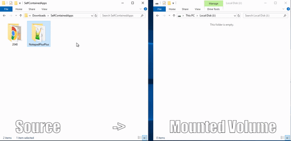

Prepare a S3 bucket
You need to create a S3 bucket to store the VHD, the mount script and the image file. The "populate" feature of this page will look for a structure like this:
AppStream needs access to the bucket you created above. Inform the bucket name with folder here: to generate a policy here, so you can add it to your bucket.
To attach the policy, go to your bucket in the S3 console > Permissions tab > Bucket policy section > Click edit > and save the policy.
Create a VHD file
You can now create a VHD file as shown below. Then you need to mount > format as NTFS > and install your application to it.
You can refer to the documentation here IF you need further instructions
After you mount and format the volume as NTFS, you can install your self-contained application there as shown below.
If you don't have a layered application now, you can download a portable app like Notepad++ to test.

If you inform the path of your application (the way it's in the OS), I can populate the launch path on the next page for you.
Finally, after copying the apps, detach the vdisk and upload the .vhd to your folder on S3.
1. Create the unformatted and uninitialized VHD file:
sudo dd if=/dev/zero of=MY_VHD.img bs=1M count=1200
This will create a VHD of 1GB in size
2. Format the VHD as EXT4
sudo mkfs -t ext4 /media/MY_VHD.img
3. Now create an empty folder and mount the VHD (so you can install your application)
sudo mkfs -t ext4 /mnt/VHDs/
sudo mount -t auto -o loop /media/MY_VHD.img /mnt/VHDs/
4. Install your application on your new mounted volume.
If you inform the path of your application (the way it's in the OS), I can populate the launch path on the next page for you.
5. Detach the volume
sudo umount /mnt/VHDs/
It goes without saying that you CAN change the names above. You can refer to the documentation here if you need further instructions
Upload the icons
Just upload the PNG or JPG files associated to the programs to your folder on S3.

You can download the icon above if you don't have one to use now.
Create and upload the VHD mount script
Elastic Fleets need a mount script to mount your VHD to the fleet instance. You can create your own script or use my example below.
If you inform an AppBlock name: and the IMGVHD name: you created above, I can populate the command below for you.
mkdir C:\EFApps\ $disk_number = Mount-DiskImage "C:\AppStream\AppBlocks\APPBLOCK_NAME\VHD_NAME" -NoDriveLetter -Passthru | Get-Disk | Select -ExpandProperty Number $partition_number = Get-Partition $disk_number | where -Property Type -ne "Reserved" | select -ExpandProperty PartitionNumber Add-PartitionAccessPath -DiskNumber $disk_number -PartitionNumber $partition_number -AccessPath "C:\EFApps\"Download script
This script will:
- create a folder name C:\EFApps\
- mount your VHD with no letter
- get the partition created and mount to the C:\EFApps folder
Once you have the script, just upload the .ps1 file to your folder on S3 (remove the .txt extension before!).